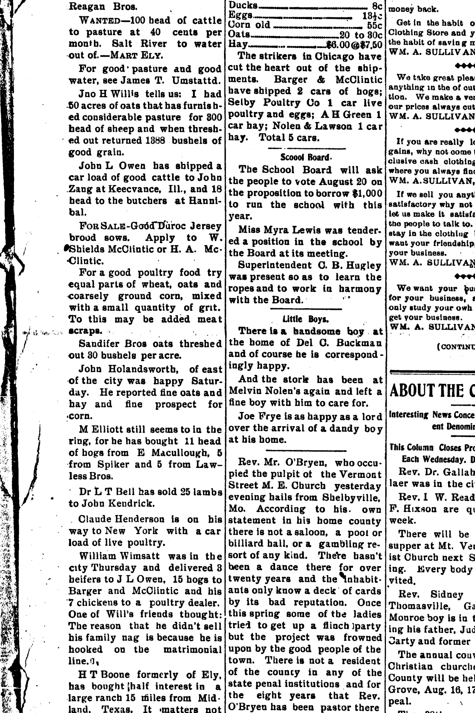
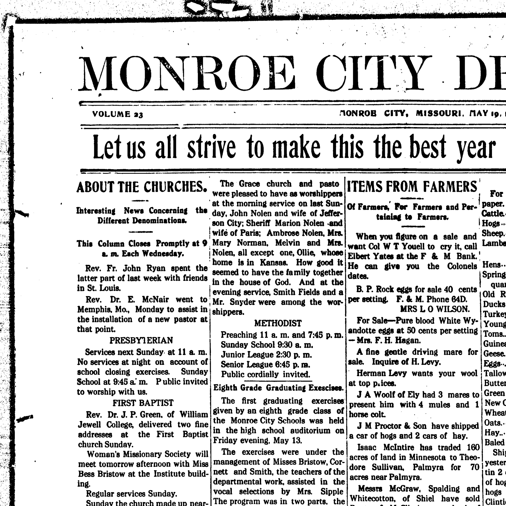
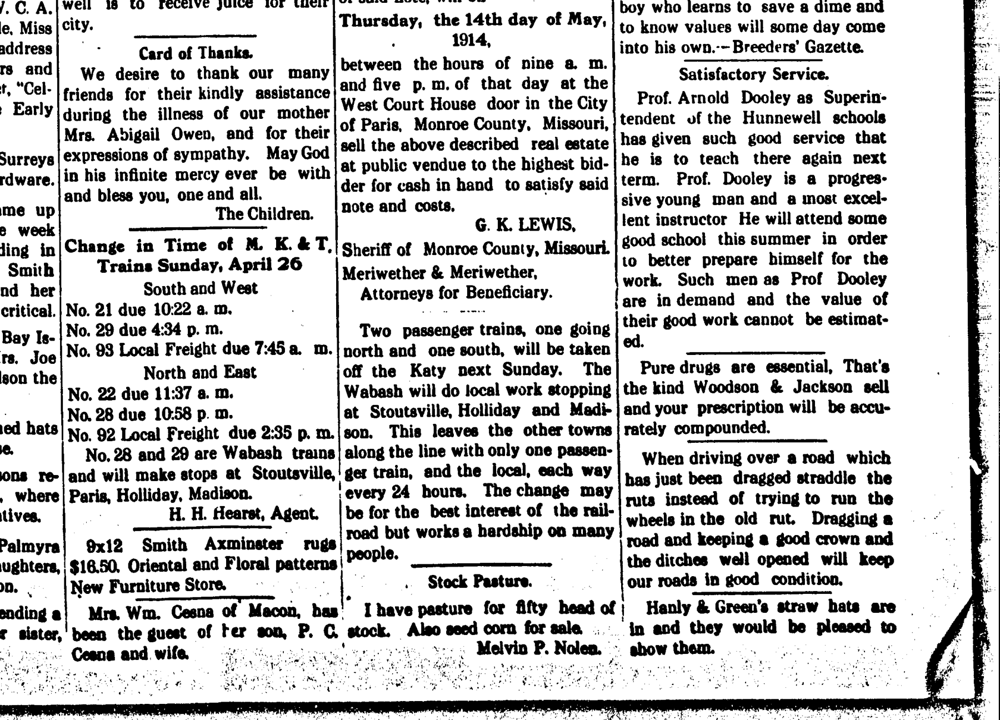
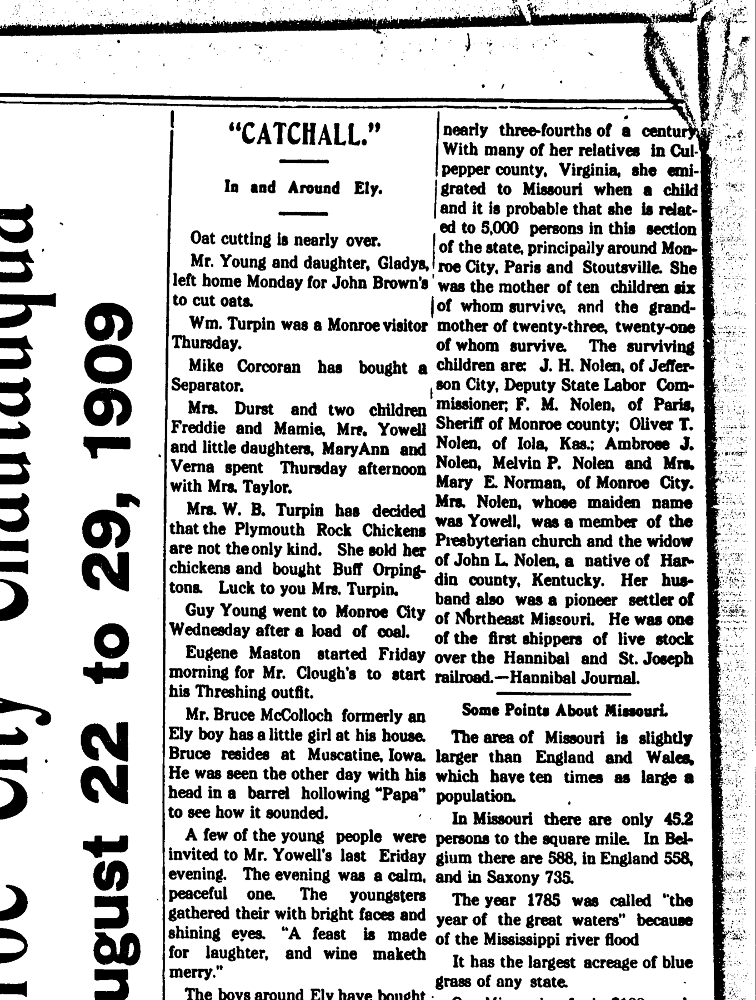

Melvin Porter Nolen b. 1870
Great-great-grandfather of Shayla Nadah Alamdari, wife of Peter.
Melvin Porter Nolen was born in 1870 (according to the family's 2015 tree)1.
Family
- Partner
- Addie Lee Foley b. 1878
- Children
- Porter Wendell Nolen 1908–1985 tradition
Life events
| Event | Date | Place and details |
|---|---|---|
| Born | 1870 | According to the family's 2015 tree1 |
| Lived | 4 Aug 1904 | Monroe City, Missouri, United States2 |
| Note | 15 Jul 1909 | Monroe City, Missouri, United States Death of his mother Mrs. Emma Jane (Yowell) Nolen in Monroe City, Monroe County, Missouri on Thursday, 15 July 1909; she emigrated as a child from Culpeper County, Virginia to Monroe County, Missouri (where she lived for nearly 75 years), was a member of the Christian Church, and was the widow of…4 |
| Lived | bet 15 May 1910 and 23 Apr 1914 | Monroe City, Missouri, United States3 |
Records




Sources
- Peter's tree, danenberg.sql, 2007–2015, personae 187, birth.
- Little Boys, Monroe City Democrat (Monroe City, Missouri), 4 August 1904, p. 2.
And the stork has been at Melvin Nolen's again and left a fine boy with him to care for.
Residing in Monroe City, Monroe County, Missouri; welcomed a newborn son in August 1904 and shipped hay in partnership as 'Nolen & Lawson'.
- Grace Baptist / Stock Pasture, Monroe City Democrat (Monroe City, Missouri), 19 May 1910, p. 2; and 23 April 1914, p. 6.
The Grace church and pasto were pleased to have as worshippers at the morning service on last Sunday, John Nolen and wife of Jefferson City; Sheriff Marion Nolen -and wife of Paris; Ambrose Nolen, Mrs. Mary Norman, Melvin and Mrs. Nolen, all except one, Ollie, whose home is in Kansas. How good it seemed to have the family together house of God. ... Stock Pasture. I have pasture for fifty head of stock. Also seed corn for sale. Melvin P. Nolen.
Translation: The Grace church and pastor were pleased to have as worshippers at the morning service on last Sunday, John Nolen and wife of Jefferson City; Sheriff Marion Nolen and wife of Paris; Ambrose Nolen, Mrs. Mary Norman, Melvin and Mrs. Nolen, all except one, Ollie, whose home is in Kansas. How good it seemed to have the family together in the house of God. ... Stock Pasture. I have pasture for fifty head of stock. Also seed corn for sale. Melvin P. Nolen.
Farmer and stockman in Monroe City, Monroe County, Missouri; attended Grace Baptist Church in Monroe City on Sunday, 15 May 1910 with his wife Addie and siblings John Nolen (Jefferson City), Sheriff Marion Nolen (Paris), Ambrose Nolen, and Mrs. Mary Norman; advertised pasture for 50 head of stock and seed corn for sale on 23 April 1914.
- 5000 Relatives in Missouri (Obituary of Mrs. Emma Jane Nolen), Monroe City Democrat (Monroe City, Missouri), 22 July 1909, p. 4.
5000 Relative in Missouri Harry Norman, a St Louis newspaper man, was in Hannibal last night returning from the funeral of his grandmother, Mrs. Emma Jane Nolen, of Monroe City, who died there Thursday. Mrs. Nolen was a pioneer of Northeast Missouri arid had lived in Monroe county for nrnrlv thrpA-fmirtho. rf a ponfurv With many of her relatives in CuI- pepper county, Virginia, she emigrated to Missouri when a child and it is probable that she is relat- , ed to 5,000 persons in this section of the 8tate pr;ncipaily around Mon. I roe Citv. Paris and Stoutsville. Rh ' was the mother of ten children six I of whnm eiirv!vn nrr fhe Hpanf. w " vy. uui v v . (iiki iiiv 1 auu mother of twenty-three, twenty-one of whom survive The surviving children are: J. H. Nolen, of Jeffer- , son City, Deputy State Labor Corn- missioner; F. M. Nolen. of Paris, Sheriff of Monroe county; Oliver T. Nolen of Iola Kas: Ambrse J. Nolen Melvin p No,en and Mre Mary E. Norman, of Monroe City. Mrs- wnose maiden name was Yowe". a member of the Pbfn ad the widow of John L Nolen, a native of Har din county, Kentucky. Her hus- ImnH alert waa o ninnaor cot t lor rt 0f Northeast Missouri. He was one of the first shippers of live stock over the Hannibal and St.JoseDh railroad.
Translation: 5000 Relatives in Missouri: Harry Norman, a St. Louis newspaper man, was in Hannibal last night returning from the funeral of his grandmother, Mrs. Emma Jane Nolen, of Monroe City, who died there Thursday. Mrs. Nolen was a pioneer of Northeast Missouri and had lived in Monroe county for nearly three-fourths of a century. With many of her relatives in Culpeper county, Virginia, she emigrated to Missouri when a child and it is probable that she is related to 5,000 persons in this section of the State principally around Monroe City, Paris and Stoutsville. She was the mother of ten children, six of whom survive her, the grandmother of twenty-six and the great-grandmother of twenty-three, twenty-one of whom survive. The surviving children are: J. H. Nolen, of Jefferson City, Deputy State Labor Commissioner; F. M. Nolen, of Paris, Sheriff of Monroe county; Oliver T. Nolen of Iola, Kas.; Ambrose J. Nolen, Melvin P. Nolen and Mrs. Mary E. Norman, of Monroe City. Mrs. Nolen, whose maiden name was Yowell, was a member of the Christian Church and the widow of John L. Nolen, a native of Hardin county, Kentucky. Her husband also was a pioneer settler of Northeast Missouri. He was one of the first shippers of live stock over the Hannibal and St. Joseph railroad.
Death of his mother Mrs. Emma Jane (Yowell) Nolen in Monroe City, Monroe County, Missouri on Thursday, 15 July 1909; she emigrated as a child from Culpeper County, Virginia to Monroe County, Missouri (where she lived for nearly 75 years), was a member of the Christian Church, and was the widow of John L. Nolen, a native of Hardin County, Kentucky and pioneer settler of Northeast Missouri who was one of the first shippers of livestock over the Hannibal and St. Joseph Railroad; she was the mother of ten children, six of whom survived her: J. H. [John] Nolen of Jefferson City (Deputy State Labor Commissioner), F. M. [Marion] Nolen of Paris (Sheriff of Monroe County), Oliver T. Nolen of Iola, Kansas, and Ambrose J. Nolen, Melvin P. Nolen, and Mrs. Mary E. Norman of Monroe City.